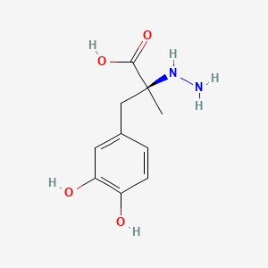
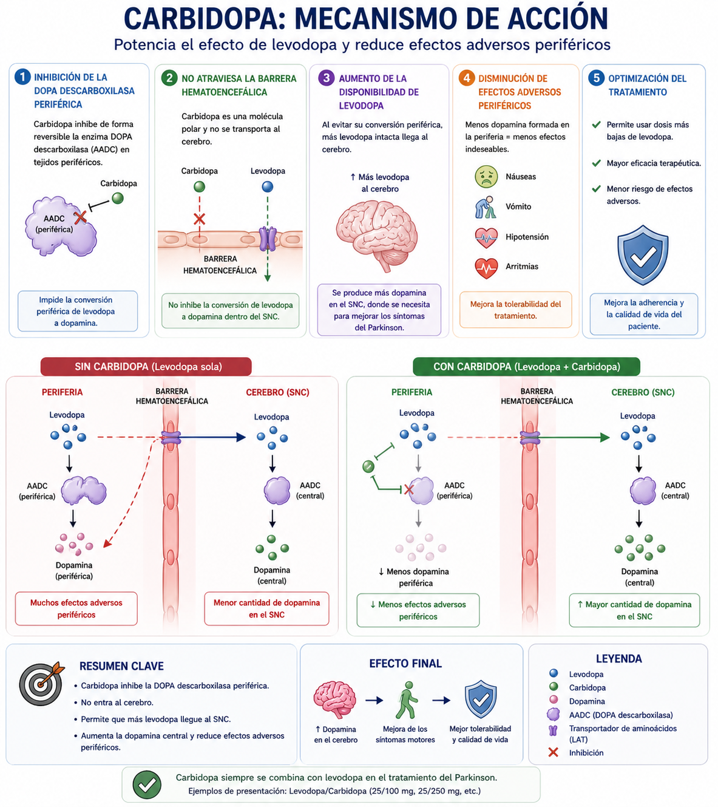

La Carbidopa es un fármaco que ejerce su acción principalmente en los tejidos periféricos. Una vez administrada, se distribuye en el torrente sanguíneo y actúa sobre la enzima dopa descarboxilasa (AADC) presente fuera del sistema nervioso central.
En condiciones normales, cuando se administra levodopa, una parte importante es convertida en dopamina en la periferia por esta enzima, lo que reduce la cantidad de levodopa que llega al cerebro y produce efectos adversos periféricos como náuseas, vómito y alteraciones cardiovasculares.
La carbidopa se une de manera competitiva a la dopa descarboxilasa periférica e inhibe su actividad, impidiendo la conversión prematura de levodopa en dopamina fuera del sistema nervioso central.
Al bloquear esta conversión periférica, aumenta la cantidad de levodopa disponible en la circulación que puede atravesar la barrera hematoencefálica mediante transportadores de aminoácidos.
Una vez en el cerebro, la levodopa es convertida en dopamina por la misma enzima (que no está inhibida en el SNC), restaurando parcialmente los niveles de dopamina en estructuras como el cuerpo estriado.
Como resultado final, la carbidopa potencia la eficacia de la levodopa, permite utilizar dosis menores y reduce significativamente los efectos adversos periféricos, sin interferir directamente con la producción central de dopamina.
La Carbidopa es un inhibidor periférico de la enzima dopa descarboxilasa (AADC). Actúa bloqueando esta enzima fuera del sistema nervioso central, lo que impide la conversión de levodopa en dopamina en la periferia. Como consecuencia, aumenta la cantidad de levodopa disponible para atravesar la barrera hematoencefálica.
Al permitir que más levodopa llegue al cerebro, donde sí se convierte en dopamina, se potencia su efecto terapéutico. Además, al inhibir la formación periférica de dopamina, disminuye efectos adversos como náuseas y vómito.
Audio explicativo
Material visual

